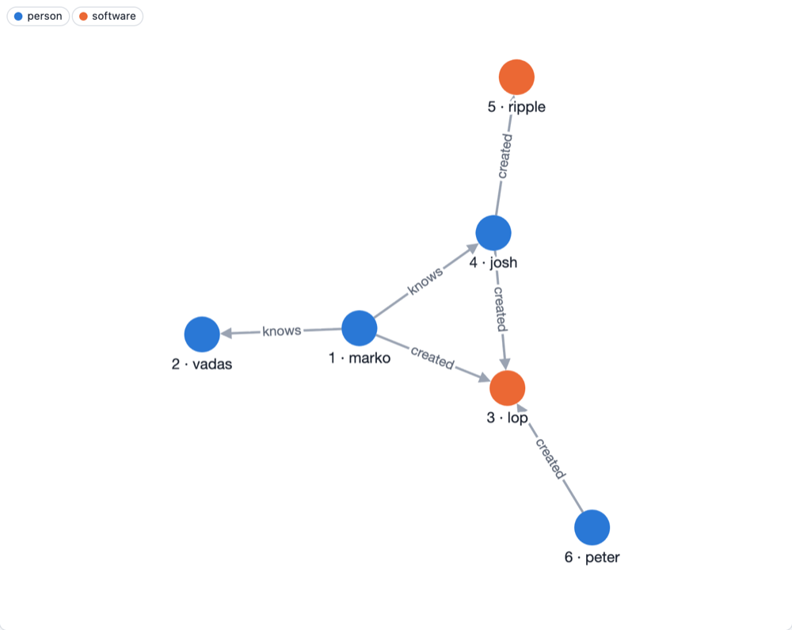

The Property Graph Model
Graphersal stores a property graph, the model of Apache TinkerPop and most graph databases.

This is the "modern" sample graph that ships with TinkerPop and with Graphersal (--graph modern,
GraphSource::tinkerpop_modern()). It has the four building blocks of the model:
- Vertices are the things: here four people and two pieces of software. Every vertex has an
id (
"1"is marko). - Edges are the connections. An edge has a direction, from its out vertex to its in vertex: marko knows josh, josh created ripple. An edge has an id too.
- Labels say what kind of thing a vertex or an edge is:
person,software,knows,created. Queries usually start by label. - Properties are key-value pairs on vertices and on edges: a person has a
nameand anage, a piece of software anameand alang, an edge aweight.
$ graphersal -e 'g.v("1").element_map()'
╭─────┬────┬────────┬───────╮
│ age │ id │ label │ name │
├─────┼────┼────────┼───────┤
│ 29 │ 1 │ person │ marko │
╰─────┴────┴────────┴───────╯
Values
A property value is a string, a 64-bit integer, a 64-bit float, a boolean, null, a UUID, a
date or time (Dates and Times), a vector (Vectors),
an array or an object (a nested map). Arrays and objects can be nested, and steps reach inside
them with path keys such as jpath("address.city") (Path Keys).
Values keep their type: a string that looks like a number or a date stays a string unless a
schema declares otherwise.
Graphersal additions
- A vertex can carry several labels (
personandemployee); the first one is its primary label, whichlabel()returns as TinkerPop does (Multi-Label Vertices). - A graph can have a schema: the labels, their properties and types, and which edges may connect which labels, enforced on every write (Schemas).
- A graph keeps a catalog of named definitions next to the data, such as saved queries (Saved Queries).
No database server
A Graphersal graph lives in the memory of the process that uses it: your Rust program, the Python
interpreter, the browser tab or the graphersal command line tool. There is no separate database
server to run. When the graph must survive the process, the Store keeps it on disk
(Persistence Overview).